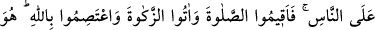
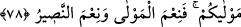
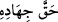
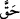
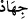

78. Allah uğrunda, hakkını vererek cihad edin. O, sizi seçti; din hususunda
üzerinize hiçbir zorluk yüklemedi; babanız İbrahim’in dininde (de böyleydi).
Peygamberin size şâhid olması, sizin de insanlara şâhid olmanız için, O, gerek daha
önce (gelmiş kitaplarda), gerekse bunda (Kur’an’da) size “müslümanlar” adını
verdi. Öyle ise namazı kılın; zekâtı verin ve Allah’a sımsıkı sarılın. O, sizin
mevlânızdır. O ne güzel mevlâ, ne güzel yardımcıdır!
“Allah uğrunda,” Tefsîru’l-Celâleyn’de geçtiği üzere Allah yolunda, başka
tefsirlerde belirtildiğine göre Allah için dalâlet ehli gibi dîninin zâhirdeki
düşmanlarıyla; hevâ ve nefis ehli gibi bâtın düşmanlarıyla “hakkını vererek” sırf O’nun
rızası için “cihad edin.” Saf bir gönül ve hâlis bir niyetle Cenâb-ı Hakk’a lâyık cihâd
edin. Cihâd ve mücâhede, düşmana karşı koyma konusunda var gücünü ortaya
koymaktır.
“ ifâdesinde “ kelimesi, mübâlağa için “ kelimesine ve “
kelimesi de sözü genişletmek için lafzatullaha râci olan zamîre izâfe edilmiştir.
İmam Râğıb der ki: “Cihad üç çeşittir: Açık düşmanla cihad, şeytanla cihad ve nefis
ile cihad. Bunların üçü de Allah uğrunda, hakkını vererek cihad edin.” âyeti ile şu
hadislerde dâhildir: “ “Kâfirlerle ellerinizle ve dillerinizle cihad edin.”[56],
“Düşmanlarınızla cihâd ettiğiniz gibi heva ve heveslerinizle de öylece cihâd
edin.”[57] Efendimiz (s.a.), Tebük gazvesinden dönünce “Küçük cihaddan büyük
cihada döndük.”[58] buyurmuştur. Şu halde nefisle cihad, düşman ve şeytanla yapılan
cihaddan daha çetindir. Nefisle cihad, onu emirleri yerine getirmeye ve yasaklardan
uzak durmaya sevk etmektir.
Mesnevî’de der ki:
Ey padişahlar, biz dıştaki düşmanı öldürdük
İçimizde, ondan daha beter bir düşman kaldı
Bunu öldürmek, aklın fikrin kârı değildir
İçteki aslan, tavşana maskara olmaz
“O, sizi seçti” yâni başkası değil, O sizi dîni ve dînine yardım için seçti. Burada
cihadın gerektirdiği ve istediği şeylere dikkat çekilmektedir.
İbn Atâ der ki: “Seçilme, mücâhedeyi doğurur, fakat mücâhede seçilmeyi doğurmaz.”
et-Te’vîlâtü’n-Necmiyye’de der ki: “Allah uğrunda, hakkını vererek cihad edin.”
Yâni hakları edâ ederek ve hazları terk ederek nefsin tezkiyesi konusunda nefislerle
cihâd edin. İki dünyanın alâkalarından kesilerek ve mülâhazaları bırakıp murâkabelere